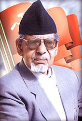

Welcome to Nepal Biggest Communist Party!!!
नेपालको सबैभन्दा ठुलो कम्युनिष्ट पार्टीमा हजुरलाई स्वागत छ!!!
The Communist Party of Nepal (Unified Marxist–Leninist), abbreviated CPN (UML) (Nepali: नेपाल कम्युनिष्ट पार्टी (एकीकृत मार्क्सवादी-लेनिनवादी)), is the major communist party in Nepal since its formation in January 1991, merging the Communist Party of Nepal (Marxist) and the Communist Party of Nepal (Marxist–Leninist). It is the main opposition party in the Federal Parliament of Nepal. It remains one of the two main parties of Nepal including governing Nepali Congress.
The CPN (UML) has led six governments: from 1994 to 1995 under Man Mohan Adhikari, from 2009 to 2011 under Madhav Kumar Nepal, in 2011 under Jhala Nath Khanal, from 2015 to 2016 under KP Sharma Oli, from 2018 to 2021 under KP Sharma Oli and once again in 2021 under KP Sharma Oli.
The party dissolved on 17 May 2018 to make way for the Nepal Communist Party in a merger with the Communist Party of Nepal (Maoist Centre). On 8 March 2021, Nepal's Supreme Court stated that the allocation of the name Nepal Communist Party upon the merger of the CPN (UML) and CPN (Maoist Centre), and by extension the merger itself, was void ab initio, as the name was already allotted to a party led by Rishiram Kattel, and that the NCP stood "dismissed". Upon the ruling, the two predecessor parties were revived in their original state immediately prior to the merger, although should the two wish to merge again with proper procedure being followed, it would be fully allowed.
HISTORY
Founding,1991-1993
The United Left Front was formed in 1990 to protest the Panchayat system and restore multi-party democracy. They organized a joint movement with the Nepali Congress, and King Birendra yielded to their Jana Andolan in November 1990. Two constituents of the United Left Front, CPN (Marxist) and CPN (Marxist–Leninist), merged on 6 January 1991 to form the Communist Party of Nepal (Unified Marxist–Leninist) before the 1991 elections, and the United Left Front became inactive.[14]
In the 1991 elections, the party won 69 of 205 seats and was the second-largest party in the House of Representatives.[15] Man Mohan Adhikari was elected head of the parliamentary group, and became the Leader of the Opposition in May 1991. On 28 June 1991, CPN (Burma) which had reconstituted itself after breaking away from CPN (United) merged into the party.[16] The fifth party congress was held in Kathmandu in January 1993, and People's Multiparty Democracy was adopted as its main ideology.[17] The same ideology of People's Multiparty Democracy theorized by Madhan Bhandari made it one of the most prominent political parties in years to come. In the fifth party congress, Adhikari was elected chairman, and Madan Bhandari was elected general secretary.[18] Bhandari was killed in a vehicle accident in Chitwan later that year, and Madhav Kumar Nepal became the party's general secretary. In November 1993, CPN (Amatya) led by Tulsi Lal Amatya, which had also broken off from CPN (United), merged into the party.
FIRST GOVERNMENT AND SPLIT,1994-1997

After the mid-term elections in 1994, the party won 88 of 205 seats in a hung parliament and formed a minority government under Man Mohan Adhikari.[15] The government lasted for nine months after Adhikari was forced to resign when he lost a no-confidence motion in September 1995. The party was back in the government in March 1997, after supporting the Surya Bahadur Thapa-led Rastriya Prajatantra Party government. Following dissension in the RPP, Lokendra Bahadur Chand resigned and CPN (UML) returned to the opposition.
The party faced its first split in March 1998, after disagreements about a water-sharing agreement with India. The new party formed with 46 legislators from the mother party as the Communist Party of Nepal (Marxist–Leninist), under the leadership of Bam Dev Gautam. The party joined the government again in December 1998, backing the Girija Prasad Koirala-led Nepali Congress-Nepal Sadbhawana Party coalition government.[14] In the 1999 elections, the party won 70 of 205 seats and was the second-largest party in the House of Representatives
DIRECT RULE UNDER KING GYANENDRA,2002-2006
Most members of the Communist Party of Nepal (Marxist–Leninist) rejoined the parent party on February 15, 2002, and the others decided to restructure the existing party.[14] The party's seventh general convention was held in Janakpur on February 1–6, 2003. The convention decided to abolish the post of party chair, vacant after the death of Man Mohan Adhikari and Madhav Kumar Nepal's unanimous reelection as general secretary of the party.
When King Gyanendra dissolved Parliament and sacked Prime Minister Sher Bahadur Deuba of Nepali Congress (NC) in 2003, five other parties protested his decision. However, when Deuba was reinstated CPN (UML) joined the provisional government with Bharat Mohan Adhikari as deputy prime minister. This government was dissolved by the king on 1 February 2005. A Seven Party Alliance was formed to protest his decision and, following an agreement with the Communist Party of Nepal (Maoist), a joint struggle was launched against the king's direct rule. On April 10, 2006, Parliament was reconvened by the king and a government was formed under Girija Prasad Koirala.
CONSTUENT ASSENBLY,2008-2015
In the 2008 Constituent Assembly elections, the party won 108 of 605 seats and finished third. Madhav Kumar Nepal resigned as general secretary, and was replaced by Jhala Nath Khanal. The party backed Communist Party of Nepal (Maoist) candidate Pushpa Kamal Dahal, and joined his government in August 2008.[19] Khanal was elected party chairman and Ishwor Pokhrel general secretary by the eighth general convention in Butwal in February 2009.
In early May 2009, the CPN (UML) joined several other parties in leaving Dahal's coalition government after he sacked Army Chief of Staff Rookmangud Katawal.[20] Following their withdrawal, they formed a new coalition government with the Nepali Congress and the Madhesi Jana Adhikar Forum under Madhav Kumar Nepal.[21] Nepal resigned in June 2010 after failing to draft a new constitution.[22] Following more than seven months of political stalemate, Khanal was elected prime minister in February 2011 with support from the Unified Communist Party of Nepal (Maoist).[23] He resigned in August after he failed to reach a consensus with the other parties on drafting a new constitution and the peace process.[23] The party joined the next government, led by Baburam Bhattarai, on August 28, 2011.[24]
Following Bhattarai's dissolution of the Constituent Assembly of Nepal when it failed to draft a new constitution before the deadline,[25] the CPN (UML) became the second-largest party after winning 175 of 575 elected seats in the 2013 elections. The party joined a coalition government with the Nepali Congress and the Rastriya Prajatantra Party under Sushil Koirala.[26] In July 2014, Khadga Prasad Oli became party chair after he defeated Madhav Kumar Nepal in the party's ninth general convention.[27] The new constitution was delivered by this government on 20 September 2015
LEADERSHIP UNDER KP SHARMA OLI,2014-TILL
After the new constitution was drafted, Sushil Koirala resigned and Khadga Prasad Oli was elected prime minister with support from the Unified Communist Party of Nepal (Maoist), the Rastriya Prajatantra Party and other parties.[29] Oli resigned in July 2016 before a motion of no confidence supported by the Nepali Congress and the Communist Party of Nepal (Maoist Centre).
In the 2017 local elections, the party won 14,099 seats (including 294 mayoral or chairman positions) and became the largest local-government party. The party elected mayors in major cities, including Kathmandu and Pokhara Lekhnath.[31][32] It announced an alliance with the Communist Party of Nepal (Maoist Centre) before the 2017 legislative and provincial elections.[33] The party won 121 seats, becoming the largest party in the House of Representatives,[34] and became the largest party in six of Nepal's seven provinces.[35] After the election, the party maintained its alliance with the Communist Party of Nepal (Maoist Centre) and formed coalition governments in Nepal's centre and six of the seven provinces. According to the power-sharing agreement, the CPN (UML) would lead governments in Province No. 1, Bagmati Pradesh, Gandaki Pradesh and Lumbini Pradesh.[36]
In the 6 February 2018 National Assembly election, the CPN (UML) won 27 of 56 contested seats and again became the country's largest party.[37] Party chairman Oli was elected the party's parliamentary leader in the House of Representatives and appointed prime minister on February 15.[38] Bidya Devi Bhandari was re-elected president on March 13
On 18 July 2021, 22 member of parliament voted for Sher Bahadur Deuba defying party whip.[41] A dispute rose among former prime ministers Madhav Kumar Nepal and KP Sharma Oli due to Madhav's faction supporting the government despite the party being the opposition party. On 18 August 2021, Madhav Kumar formed a new party called Communist Party of Nepal (Unified-Socialist).[42] Former Prime Minister Jhalanatha Khanal, party vice presidents and as many as 31 MP's joined the new party. This made a split from top to lower level committees of party.[43] Another minor group, led by Hridayesh Tripathi, also split away on 26 August 2021 and formed the People's Progressive Party
.jpg)
.jpg) On 18 July 2021, 22 member of parliament voted for Sher Bahadur Deuba defying party whip.[41] A dispute rose among former prime ministers Madhav Kumar Nepal and KP Sharma Oli due to Madhav's faction supporting the government despite the party being the opposition party. On 18 August 2021, Madhav Kumar formed a new party called Communist Party of Nepal (Unified-Socialist).[42] Former Prime Minister Jhalanatha Khanal, party vice presidents and as many as 31 MP's joined the new party. This made a split from top to lower level committees of party.[43] Another minor group, led by Hridayesh Tripathi, also split away on 26 August 2021 and formed the People's Progressive Party
On 18 July 2021, 22 member of parliament voted for Sher Bahadur Deuba defying party whip.[41] A dispute rose among former prime ministers Madhav Kumar Nepal and KP Sharma Oli due to Madhav's faction supporting the government despite the party being the opposition party. On 18 August 2021, Madhav Kumar formed a new party called Communist Party of Nepal (Unified-Socialist).[42] Former Prime Minister Jhalanatha Khanal, party vice presidents and as many as 31 MP's joined the new party. This made a split from top to lower level committees of party.[43] Another minor group, led by Hridayesh Tripathi, also split away on 26 August 2021 and formed the People's Progressive Party .jpg)